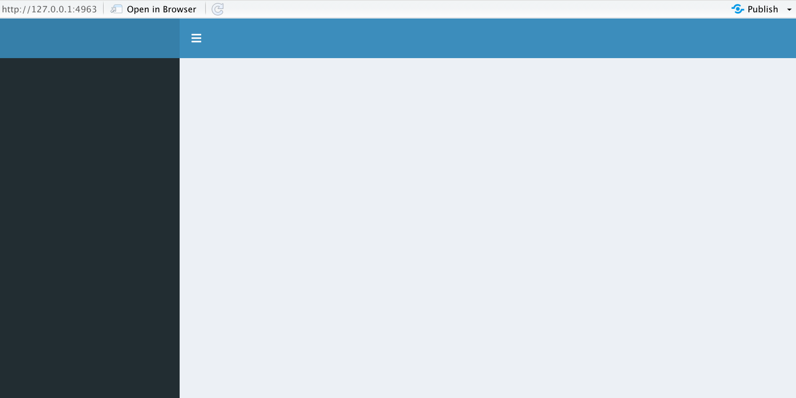

Chapter 6 Next steps
6.1 Going fancy with Shiny Dashboards
library(shinyashboard)This is the skeleton code for creating Shiny dashboards. There are three components to a Shiny dashboard:
Header
Sidebar
Body
library(shiny)
library(shinydashboard)
ui <- dashboardPage(
dashboardHeader(),
dashboardSidebar(),
dashboardBody()
)
server <- function(input, output) { }
shinyApp(ui, server)
6.2 Interactive Documents
If you are familiar with writing R Markdown HTML documents, it is possible to embed Shiny widgets and render functions into them just be modifying the YAML header:
---
runtime: shiny
output: html_document
---Then you can insert widgets and render functions into code chunks in the document:
selectInput(inputId = "choice_select", label = "Select box",
choices = list("Choice 1" = 1, "Choice 2" = 2, "Choice 3" = 3),
selected = 1)
renderPlot({
plot(x = airquality[, 4], y = airquality[, as.numeric(input$choice_select)])
})It is important to note that interactive R-Markdown documents must be hosted with Shiny Server or RStudio Connect like a normal shiny app otherwise the interactive functionality will not work. Interactive documents cannot be shared as a standalone html file, though the rmarkdown file can be shared and run locally.
For more information, check the documentation here
6.3 Render UI Elements From the Server Side
Sometimes we may to generate a UI element that is updated in response to actions we take with other UI elements or in response to calculations that have happened on the server side e.g we have a numeric widget that is filtering the number of rows in a data-frame and we also want to have an selectInput based on the values in a column in that data-frame.
We can control this with a uiOutput - this function allows us to render a UI element from the server side. E.g:
ui <- fluidPage(
sidebarPanel(
numericInput(inputId = "filter", label = "Number of days to filter out", value = 1,
min = 0, max = 150),
uiOutput("select_out") # We have an output element in the UI, this where the
# the widget will be placed
),
mainPanel(
textOutput(outputId = "text_out")
)
)
server <- function(input, output, session) {
filtered_data <- reactive({
airquality$day_into <- paste0("Day", 1:nrow(airquality))
n_rows <- nrow(airquality) - input$filter
return(head(airquality, n = n_rows))
})
output$select_out <- renderUI({
filtered_df <- filtered_data()
d_list <- c(filtered_df$day_into)
d_list <- as.list(d_list)
# we've used a selectInput widget here
# we can use any input widget here
selectInput(
inputId = "day_select", label = "Select filtered day", choices = d_list,
selected = "Day1"
)
})
# even though that the widget was created
# on the server side we still access it with
# input$inputId
output$text_out <- renderText({
print(input$day_select)
})
}
shinyApp(ui, server)